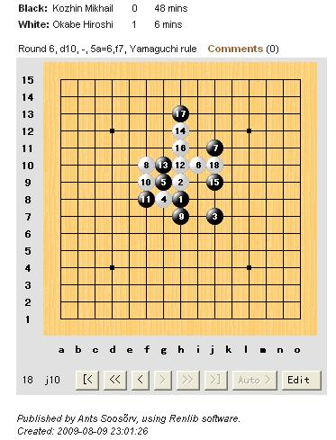

Kozhin VS Okabe
#1 Kozhin VS Okabe 作者：nara 发表时间：2009-8-10 7:45:52

Kozhin又用了跟大鱼一样的那个变化！结果被Okabe六分钟搞定！
#2 Re:Kozhin VS Okabe 作者：白河愁 发表时间：2009-8-10 8:58:27
额……看晕了编辑掉
#3 Re:Kozhin VS Okabe 作者：nara 发表时间：2009-8-10 9:33:53
大鱼跟Kozhin也是这个7，9也一样！
#4 Re:Kozhin VS Okabe 作者：小丸.net 发表时间：2009-8-17 16:30:52
一个变化在同一个比赛上用2次，不死简直就是天方夜谈！